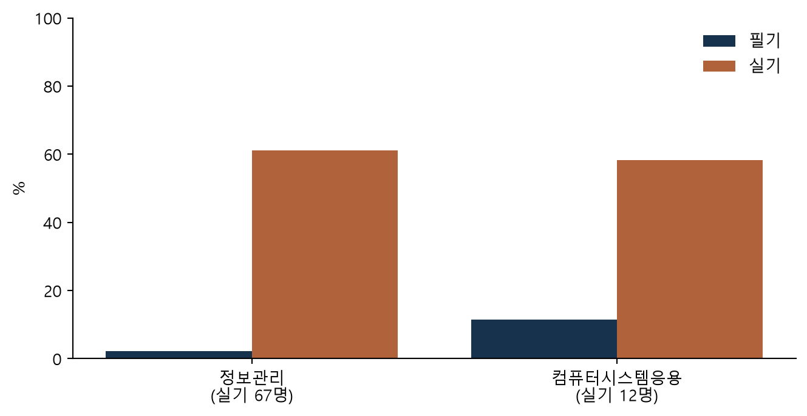

names =", ".join(latest.index)print(f"{spec['title']} 공개 통계로 {items['year'].min()}–{last}년 접수·응시·합격을 정리했다. 다룬 단위는 {names}이다.")print(f"합격률의 분모는 {base_word} 인원이며, 이 선택을 포함한 판단은 판단 기록에 근거와 함께 남겼다.")
국가기술자격 기능사 · 조리분야 공개 통계로 2021–2025년 접수·응시·합격을 정리했다. 다룬 단위는 한식조리, 양식조리, 일식조리, 중식조리, 복어조리, 조주이다. 합격률의 분모는 응시 인원이며, 이 선택을 포함한 판단은 판단 기록에 근거와 함께 남겼다.
자료 = 한국산업인력공단_직무분야별 기능사 자격통계현황_20251231 (https://www.data.go.kr/data/3072670/fileData.do)
조회일 = 2026-11-04
원본 = raw.csv (utf-8-sig, 가공 전)
뽑은 행 = 조리분야 행 + 그 아래 종목 한식조리, 양식조리, 일식조리, 중식조리, 복어조리, 조주
연도 = 2021–2025
필기 합격률 = 필기 합격 ÷ 필기 응시 × 100
실기 합격률 = 실기 합격 ÷ 실기 응시 × 100
결시율 = (1 − 필기 응시 ÷ 필기 접수) × 100
2 결과
코드
view = pd.DataFrame({"필기 응시": latest["written_sat"].map("{:,}".format),"필기 합격률(%)": latest["written_rate"].map("{:.1f}".format),"결시율(%)": latest["absent"].map("{:.1f}".format),"실기 응시": latest["practical_sat"].map("{:,}".format),"실기 합격률(%)": [("–"if pick["작은 표본"] =="비율 쓰지 않음"and n <500elsef"{r:.1f}")for r, n inzip(latest["practical_rate"], latest["practical_sat"])],})view.index.name ="단위"view
표 1: 최근 연도 단위별 응시·합격
필기 응시
필기 합격률(%)
결시율(%)
실기 응시
실기 합격률(%)
단위
한식조리
61,122
39.6
14.9
38,824
36.7
양식조리
30,185
39.3
14.5
16,701
37.4
일식조리
9,766
51.5
14.9
5,811
37.7
중식조리
13,037
49.2
13.6
8,458
41.2
복어조리
1,733
58.5
15.0
1,324
26.0
조주
6,535
61.9
20.4
5,220
67.4
코드
fig, ax = plt.subplots(figsize=(8, 3.8))x =range(len(latest))ax.bar([i -0.2for i in x], latest["written_rate"], width=0.4, color="#17324d", label="필기")ax.bar([i +0.2for i in x], latest["practical_rate"], width=0.4, color="#b0623a", label="실기")ax.set_xticks(list(x), [f"{name}\n(실기 {n:,}명)"for name, n inzip(latest.index, latest["practical_sat"])])ax.set_ylim(0, 100)ax.set_ylabel("%")ax.legend(frameon=False)ax.spines[["top", "right"]].set_visible(False)plt.show()
그림 1: 최근 연도 필기·실기 합격률(%), 축은 0부터

코드
if pick["가장 어려운 시험"] =="쓰지 않음":print("어느 시험이 '가장 어렵다'는 문장은 쓰지 않았다. 필기와 실기 중 무엇을 기준으로 하느냐에 따라 답이 바뀌기 때문이다.")else: column ="written_rate"if pick["가장 어려운 시험"].startswith("필기") else"practical_rate" word ="필기"if column =="written_rate"else"실기" hardest = latest[column].idxmin()print(f"{word} 합격률 기준으로 가장 낮은 단위는 {hardest}({latest.loc[hardest, column]:.1f}%)였다.")
실기 합격률 기준으로 가장 낮은 단위는 복어조리(26.0%)였다.
3 판단 기록
코드
print("| 판단할 자리 | 결정 | 근거 |")print("| --- | --- | --- |")for key, value in decided.items():print(f"| {key} | {value['결정']} | {value['근거']} |")
판단할 자리
결정
근거
분모
응시
결시자는 시험을 치르지 않았음
집계 단위
종목 행만
한식·양식·일식·중식을 나란히 보려는 글
포함 종목
전부
조주(바텐더)도 공식 분류상 조리분야. 묶음 성격이 다르다는 점은 한계에 적음
작은 표본
포함·인원 표시
복어조리 등 응시가 적은 종목도 인원과 함께 보임
성별
쓰지 않음
이 글의 질문은 종목 간 차이. 원인 정보 없는 성별 비교는 넣지 않음
가장 어려운 시험
실기 기준으로 씀
조리 기능사는 실기가 자격의 핵심. 기준을 문장에 밝힘
4 자료의 한계
실기 응시자에는 전년도 필기 합격자가 섞여 있어 필기·실기 합격률을 곱해 “최종 합격률”을 만들 수 없다
같은 사람이 한 해에 여러 번 응시하면 각각 센다
남자 행이 없어, 남자 수치가 필요하면 남녀합산에서 여자를 빼서 만들어야 한다
실기 합격과 자격 취득 인원이 다른 행이 있다 (CHECK.md)
코드
if pick["성별"] !="쓰지 않음": women = rows[(rows["sex"] =="여자") & (rows["item"].isin(latest.index)) & (rows["year"] == last)].set_index("item") both = latest[["practical_sat", "practical_passed"]] men = both - women[["practical_sat", "practical_passed"]]print("\n## 성별 실기 합격률 (남자 = 남녀합산 − 여자)\n")print("| 단위 | 여자(%) | 남자(%) |")print("| --- | --- | --- |")for name in latest.index: w = women.loc[name, "practical_passed"] / women.loc[name, "practical_sat"] *100if women.loc[name, "practical_sat"] elsefloat("nan") m = men.loc[name, "practical_passed"] / men.loc[name, "practical_sat"] *100if men.loc[name, "practical_sat"] elsefloat("nan")print(f"| {name} | {w:.1f} | {m:.1f} |")print("\n이 자료에는 응시자의 전공·경력·응시 횟수가 없어 차이의 원인은 알 수 없다.")
재현 정보
코드
print(f"- 다시 만들기: `python pipeline.py fetch {case}` → `inspect` → `DECISIONS.md` 작성 → `build`")print("- 글쓰기 보조: 생성형 AI로 판단할 자리를 찾고 문장을 다듬었으며, 판단은 위 기록대로 사람이 내렸다")